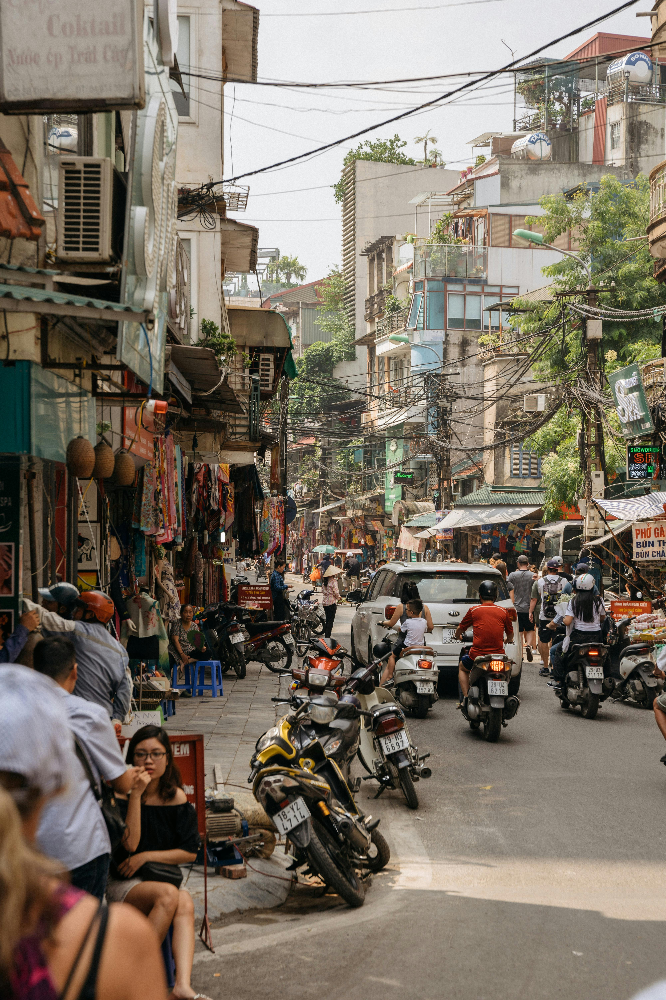

Travel Tips for Congo Brazzaville
Before you visit Congo Brazzaville, here are some essential tips to make your trip smooth and enjoyable.
1. Stay Hydrated
Congo has a hot and humid climate, so make sure to drink plenty of water throughout the day. It's essential to stay hydrated, especially if you’re exploring outdoors.
2. Use Local Transportation Wisely
Public transportation options are available, but they may not always be on time. For convenience and safety, consider using taxis or arranging private transportation for longer trips.
3. Respect Local Customs

Congo Brazzaville has a rich cultural heritage. Always show respect for local traditions and customs. For instance, it's customary to greet with a handshake when meeting people.
4. Watch for Wildlife

Congo is home to unique wildlife, including gorillas and other species. If you're exploring nature reserves, always be cautious and follow safety guidelines provided by tour guides.
5. Be Prepared for the Weather
The climate is tropical, so pack light clothing and an umbrella or raincoat. Even in the dry season, you can experience sudden rain showers, especially in the rainforest areas.
6. Currency and Payment Methods

The local currency is the Central African CFA franc (XAF). It’s a good idea to carry some cash, as many places may not accept credit cards. ATMs are available in larger cities like Brazzaville.